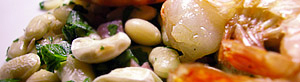

Bohnen und Garnelen
5 von 6eine tasse weisse bohnen mind. 8 std. einlegen. in frischem wasser garkochen und abtropfen. in olivenöl 100g speck, fein gehackter knoblauch und 2 lorbeerblätter anziehen. die bohnen beigeben. in einer bratpfanne die garnelen rosa braten und auf einem teller zusammen anrichten. einwenig olivenöl und gehackte petersilie darüber geben.
